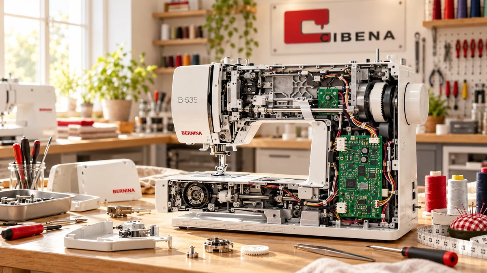

Reparatur, Wartung & Service
Ihre Nähmaschine näht nicht mehr sauber, blockiert oder braucht eine Wartung? Wir prüfen Ihre Maschine fachgerecht und kümmern uns zuverlässig um Reparatur, Pflege und Service.
Typische Anliegen
- Faden reißt
- Maschine blockiert
- Fadenspannung stimmt nicht
- Stoff wird nicht richtig transportiert
So läuft es ab
- Anfrage stellen
- Maschine vorbeibringen
- Prüfung in der Werkstatt
- Rückmeldung & Service
Gut zu wissen
Bitte bringen Sie nach Möglichkeit Maschine, Fußanlasser, Netzkabel und vorhandenes Zubehör mit.
